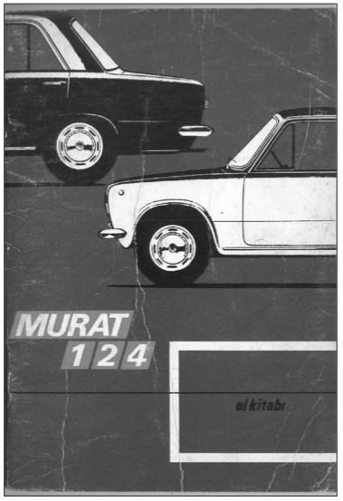
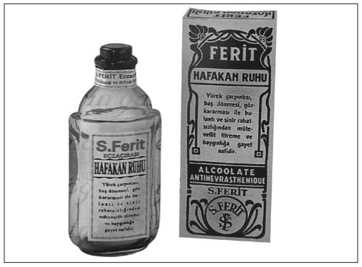

H
Hacı Murat (Otomobille tanışan Türklerin otomobilleri kişiselleştirmeye yönelik ilk örneği): Halkımız yeni tanıştığı her şeyi sever ve ona hemen güzel bir ad takarak kendiyle özdeşleştirir. Yaratıcı Türk insanımız, Tofaş’ın ürettiği kuş serisinin ilki olan çelik gövdeli Murat 124’e nedendir bilinmez, bu adı takmıştır. Yıllardır Muratlara neden Hacı Murat dendiği bilinmemektedir.
1971’den 1976’ya kadar Bursa’da Murat 124 adıyla üretilen ve halk arasında Hacı Murat olarak adlandırılan “Hacı Murat”lar, dünyanın en çok satan otoları arasında yer alırken Türkiye’de üretilen ilk çelik gövdeli otomobil olarak da döneme damgasını vurmuştur. Murat 124, 30 yıl sonra Opet’in reklam filminde başrolü Cem Yılmaz’la paylaşarak yeniden moda oldu. Elinde Murat 124’ü olanlar, oto sanayilerine giderek yeniletmek istediler. Reklam filminin kahramanı Güzel İnsan Taşıma Taşıtı’nı (GİTT) yaratan Hasan Uysal’ın kapısını “Bizimkini de GİTT’e benzet” diye aşındıranlar oldu. Son olarak, Hacı Murat’ın hacca gitmişliği yoktur ve kendisine bu ismin neden takıldığı tam anlamıyla bir sırdır.

“Murat 124’’ün hacca gitmişliği yoktur, ama yaratıcı Türk insanımız ona “Hacı Murat” der.
Hacıağa: (Bkz. Savaş Vurguncuları).
Hafakan Ruhu (Sıkıntıya, bunalmaya ve strese iyi gelen meşhur ilaç): Şimdiki kuşağın, Hafakan Ruhu’nu hatırlayacağını hiç zannetmiyoruz. Zamanında iddia edilirdi ki bir kahve fincanı suya dört beş damla damlatılıp içilen bu ilaç, sıkılmış, daralmış, “Bunalıyorum ülen!” diye bağırmak üzere olanlar için şifa kaynağıydı. Bu hafakanın ne tür bir şey olduğu bilinmezdi, ama sıkıntıya, tere, biraz sinire neden olduğu belliydi. Kimilerine göre de bu bir canlıydı. Cüneyt Arkın’ın Dünyayı Kurtaran Adam filmindeki bol pelüşlü dev yaratıklara benzer bir varlık olarak tahayyül edilirdi. Bir insanı hafakan bastığında ya da boğmaya çalıştığında önce yüzüne bir avuç kolonya çarpılır, ellerle ya da ele alınan bir şeyle rüzgar yapılırdı. Sözlükteki karşılığı ıstırap, sıkıntı, çarpma, bunalma ve yürek oynaması olan Hafakanlara karşı 1930 ve 40’lı yıllarda meşhur bir sakinleştirici kullanıyorlardı: “Hafakan Ruhu”. Artık piyasada bulunmayan bu ilacı, Süleyman Ferit Eczacı-başı Müstahzarat ve Itriyat Fabrikası üretiyordu. 1928’de üretilen bu ilacın halk arasında tutulması ve isminin günümüze kadar ulaşması da şaşırtıcı değil. Çünkü ürünün ismiyle işlevi tam olarak uyuşuyordu. Şişesinin üzerinde “Yürek çarpıntısı, baş dönmesi, göz kararması ile bulantı ve sinir rahatsızlığından mütevellit titreme ve baygınlığa gayet nafidir” açıklaması yer alırdı. Hafakan Ruhu için Eczacı Mehmed Daim tarafından 1929’da yayımlanan “Türk Tıbbi Müstahzaratı” adlı kitapta şu ifadelere yer verilmişti: “Ferit Hafakan Ruhu, hususi bir terkipte yapılmış olup her türlü asabi teheyyücatta, bayılmalarda, sinir nöbetlerinde, tıkanıklıklarda emsalsiz bir ilaçtır. Seyahatte, deniz ve karayolculuğunda herkese lazımdır. Bir damlası bir miktar suda içildiği zaman taze hayat ve ferahlık vermekle tanınmış bir Türk müstahzaratıdır.” (aktaran Mert Sandalcı, Eczacı-başı İlaç Sanayi 2003 Eczacılar Günü Broşürü)
Vakti zamanında Hafakan basmalarına iyi gelen Hafakan Ruhu’na bugün ne kadar ihtiyacımız var değil mi?

Sözlükteki karşılığı ıstırap, sıkıntı, çarpma, bunalma ve yürek oynaması olan Hafakanlara karşı 1930 ve 40’lı yıllarda kullanılan Hafakan Ruhu meşhur bir sakinleştirici ilaçtı.
Halk Kumar Oynamıştır: (Bkz. Banker Faciası).
Halk Şirketi (Cumhuriyet tarihinin halka ait ilk şirketi): Ankara, Cumhuriyet’in ilk yıllarından itibaren sermaye birikimine destek olacak bir yönlendirme içine girmişti. Daha Cumhuriyet ilan edilmeden önce 1922’de Türkiye Millî İthalat ve İhracat Anonim Şirketi kuruldu. Şirketin kurucuları arasında 54 milletvekili ve 37 tüccar bulunmaktaydı. Gazetelerde çıkan haberler şirketin yeni rejimin bir şirketi olduğunu gösteriyordu. Yine o dönemde gazetelere verilen ilanlarda şirkete yönelik hükümet desteği vurgulanıyor ve halkın hisse senedi alması isteniyordu. Şirket her yerde iş yapmasına, yaptığı işlerin çoğunu kamu sektöründen almasına karşın zarar ediyordu. Bu durumu gören hükümet, Maliye Bakanlığı kanalıyla iflas etmek üzere olan şirketin 90 bin liralık hissesini alarak devleti şirkete ortak etti. Ardından şirketin yönetimi, hükümetin “itimat ettiği” kişilerle donatıldı. Bu güvenilir kişilere rağmen şirket bir süre sonra yine zarar etti. Bu kez, hükümet tarafından herhangi bir açıklama yapıldı mı bilmiyoruz, ancak döneme ilişkin yorumlar, örgütlü yolsuzluğun yapıldığı yönünde. Mete Tunçay, şirketin çeşitli yolsuzluklara karıştığını ve 1937’de fiilen, 1949’da ise hukuken son bulduğunu belirtmiştir. Şirket aslında o dönemde devlet eliyle zengin yaratmanın bir aracısı olma konumundadır.
İlk gerçek anonim şirket ortaklığının gerçekleşmesi için Türkiye’nin 1970’li yıllara kadar beklemesi gerekiyordu. 1968’de halkın küçük tasarruflarını harekete geçirmek ve değerlendirmek amacıyla 100 milyon lira sermayeli Hastaş kuruldu. Hisselerinin yüzde yüzü halka açık ve bu hâliyle Türkiye’deki ilk gerçek anonim ortaklıktı. Politika dışında olan kuruluş eğitim, sağlık, turizm ve sanayi alanlarında yatırım yaptı. Dr. Suphi Baykam’ın önderliğindeki holding, başarısız bir girişim olarak popüler ekonomi tarihimizin sayfalarını süsledi.
Han-ı Yağma (Ünlü şair Tevfik Fikret’in bir şiiri): Tevfik Fikret bu şiiri İttihat ve Terakki iktidarı döneminde yazdı. Peki, neden? İttihat ve Terakki yönetimi, karaborsa ve spekülatif kazançlara göz yumarak bilinçli bir şekilde Müslüman-Türk zenginlerin oluşmasına çalışıyordu. Bir yandan karaborsayla mücadele eder gibi görünürken, bir yandan da kendilerine yakın grupların kayrıldığı bir düzen planlanmıştı. Talat Paşa da yolsuzlukları kabul etmekle birlikte, “Her harpte Türk olmayan unsurlar zenginleşiyor, bu sefer de Türkler zenginleşsin. Bu gerekliydi” diyerek politikasını savunmuş ve suçu daha çok Kara Kemal ve Topal İsmail Hakkı Paşa gibilerin üzerine atmıştır. Ünlü şair “Han-ı Yağma”yı işte böyle bir ortamda yazma gereğini duymuştu.
“Yiyin, efendiler yiyin; bu han-ı iştiha sizin;
Doyunca, tıksırınca, patlayıncaya kadar yiyin!
Bu harmanın gelir sonu, kapıştırın giderayak!
Yarın bakarsınız söner bugün çatırdayan ocak!
Bugün ki mideler kavi, bugün ki çorbalar sıcak
Atıştırın, tıkıştırın kapış kapış, çanak çanak... “
Hava Oyunları (Osmanlı’nın son dönemindeki bir tür borsa oyunu): Osmanlı Devlet bürokrasisi, aynı zamanda, Avrupalı sermaye gruplarının da çıkarlarını gözetecek şekilde hareket ediyordu. 1875 yılına kadar süren bu ilk borçlanma çılgınlığı, aldıkları komisyonlar nedeniyle sermayedarlar ve aracılar açısından son derece kârlı bir faaliyet alanıydı. Başta Galata’daki Havyar Han olmak üzere, kenar mahallelere kadar taşınmış olan sarraflar, halkı o zaman “Hava Oyunları” denilen, gerçekte kazananın da kaybettiği bir tür borsa oyununa alıştırmışlardı. Rüşvetin yaygın olması nedeniyle, devlet memurları, “Bu kadar para, mal ve mülk nereden geldi?” diye sorulduğunda, “Hava oyunlarından kazandım” diyerek kendilerini savunuyorlardı.
Havalı Apollo (Makineleşmeyle tanışan yaratıcı Türk insanının, ilk şehirlerarası otobüse taktığı isim): Halkımız genellikle, yeni olan her şeye bir isim takmayı ve belki de sahiplenmek için bir benzetme yapmayı alışkanlık hâline getirmiştir. 1960’lı yıllarda, otomotiv sanayiinin başlangıç yıllarının en önemli firmalarından biri de, bugün varlığını Otokar adıyla sürdüren Terzi İzzet’e ait bir şirketti. Enteresan bir örnektir. Terzi İzzet, İstanbul Valisi Kırdar’ın daha sonra Menderes’in terziliğini yapan İzzet Ünver, İnönü’nün tavsiyesiyle otomotiv sanayiine girmişti. Şirket, İstanbul Bahçelievler’deki fabrikasında Türkiye’nin ilk şehirlerarası otobüsünü Magirus Deutz lisansıyla üretmeye başlamıştı. Firmanın bu aşamaya gelmesi kolay olmadı. İlk olarak, otobüs yapmak için Almanya’dan motor getirtilmiş, Pirelli’den de lastik temin edilmişti. Bunun dışında ne yan ürün var ne de otomotiv sektöründe çalışacak yetişmiş eleman. Türkiye’de o zamanlar otomotiv yan sanayii olmadığı için bütün yan sanayi ürünleri fabrikada üretiliyordu. Örneğin, ülkede otobüsün kapısına takılacak kilit üreten firma yoktu. Bu nedenle kilit, anahtar, kalorifer, koltuk gibi bir sürü detay firma tarafından üretiliyordu. Bu şartlar altında, 37 kişilik ilk otobüs piyasaya çıktı. Bu, Türkiye’nin ilk şehirlerarası otobüsüydü. 1967 yılında hava süspansiyonlu otobüsler yapılmaya başlandı. 1968’de 45 kişilik araca 8 silindirli havalı motor konularak aracın boyu uzatıldı. Daha sonra araç İzmir Fuarı’na gönderildi. Tam bu sıralarda Amerikalılar da Apollo uzay aracını fırlatmışlardı. Otobüsü İzmir Fuarı’nda görenler araca “Havalı Apollo” ismini koydular ve bu isim zamanla benimsendi.
Hayali İhracat (Türklerin bırakamadıkları zararlı bir alışkanlık): 1980’lerde bu ihracat şekliyle tanışan Türkiye’nin, Hazine’si de bu ihracatla bilinçli olarak yağmalandı. Nasıl mı? Anlatalım.
1980 sonrası, ihracatın Türkiye’nin döviz sıkıntısından kurtuluşunu sağlayacağı düşünülerek, bu alanda başlatılan seferberlik hareketiyle “teşvik tedbirleri”nde yeni düzenlemeler yapılmıştı. 1983’te çıkarılan Türk Parasının Kıymetinin Korunması Kanunu’nda yapılan bir değişiklikte de “Türkiye’ye her türlü yoldan ve cinsten döviz ithali serbesttir. Hiçbir kayda tabi tutulmaz ve menşei araştırılmaz” denilmişti. Amaç, ihracatı teşvik etmek, korumak ve kollamaktı. 1984’te “İhracatı Teşvik Kararı”nın 17. maddesiyle, “Başbakanlık Teşvik ve Uygulama Başkanlığı’ndan izin alınmaksızın hiçbir devlet kurulu ve denetim biriminin ihracatçı şirketlerin imalatı, ihracatı, yurtiçi satış ve ticari itibarını zedeleyici” bir uygulama yapamayacağı karara bağlandı. 1985’te “Kaçakçılığın Men ve Takibine İlişkin Ka-nun”da yapılan değişiklikle ekonomik suça, ekonomik ceza ilkesi getirildi. 1 Ocak 1987’den itibaren geçerli olmak üzere 1986’da çıkarılan bir kararname ile herhangi bir ihracatta, naylon fatura olup olmadığına bakılmaksızın vergi iadelerinin ödenmesi sağlandı. Sistem böyle olunca, kısa yoldan para kazanmayı kendisine amaç edinen girişimcinin tek yapması gereken şey, yaratıcı hayali ihracat yol ve yöntemlerini bulmaktı. Kimi zaman, naylon şirket ve faturalarla gerçekte yapılmayan ihracat yapılmış gibi gösterildi, fiyatlar şişirildi. Kimi zaman da ihraç edilecek mallar gümrüklerden geçerken, olmayan mallar varmış gibi beyan edildi. Yüzde 35-40’lara varan ihracat teşvikleri etkisiyle, 2 milyar dolar düzeyinde seyreden Türkiye’nin yıllık toplam ihracatı, 1987’de hayali ihracat ile birlikte 10 milyar doları aştı. 1984-1987 yılları arasındaki 4 yıllık dönemde gerçekleştirilen toplam ihracat ise 32 milyar 740 milyon dolar oldu. Hayali ihracatın boyutları bugüne kadar tam olarak hesaplanamadı ve çelişkili rakamlar telaffuz edildi. Örneğin, IMF’nin hazırladığı bir raporda, Türkiye’nin 19841987 yılları arasında yalnızca OECD ülkelerine gerçekleştirdiği ihracatın yüzde 26’sının hayali olduğu saptandı. Peki, ihracat hayali, belgeler sahte, öyle de olsa böyle de olsa ülkeye döviz girişi sağlanmıyor muydu? Dönemin Başbakan Yardımcısı Kaya Erdem de zaten böyle düşünüyor ve neredeyse bu işin teşvik edilmesi gerektiğini söylüyordu. Gazetelere verdiği demeçte, “Ülke ekonomisine döviz kazandırdığı için bu hayali ihracat işinin teşvik edilmesi gerektiğini” söyleyecek kadar işi ileri götürmüştü. 1984-1990 yılları arasında 70 kadar siyasetçi ve bürokratla, toplam 256 firmanın adının karıştığı, 1993’ün rakamlarıyla devletin 50 trilyon lira zarara uğratıldığı “hayali ihracat”ta siyasi sorumlular bulunamadı. Hayaliciler cephesinde ise, aralarında çok ünlü ve büyük firmaların da yer aldığı hayali ihracat vurgununda 58 firma hakkında dava açıldı. Ertan Sert, Turan Çevik ve Hasbi Menteşoğlu gibi işadamları hapis cezasına çarptırıldı. O zamanki hükümete yakın olan, bugünün de bazı büyük holding sahipleri, hayali ihracat yaptıkları hâlde yargılanmaktan kurtuldu.
Hayali Mobilya Olayı: (Bkz. Yeğen Yahya Demirel Olayı).
Hayalperest Hamdi (Atatürk’ün Ahmet Hamdi Başar’a taktığı lakap): Serbest Cumhuriyet Fırkası’nın beklenmedik yükselişi, halkın hoşnutsuzluğunun bir kanıtı olarak değerlendirilirken, fırkanın kapatılmasının ardından Cumhuriyet önderleri kurdukları rejimi sorgulamaya başladı. Ülkede neyin yanlış gittiği yapılacak bir geziyle bizzat “Reis-i cumhur” tarafından saptanacaktı. Büyük bir uzmanlar kadrosunun da katıldığı gezilerden çıkan sonuca göre, durum pek de iç açıcı değildi. Merkezi ve yerel idare yöneticilerinin dışında hiç kimse rejimden memnun değildi. Üç ayı aşkın bir sürede tamamlanan gezi, yalnız yeni sorunların ortaya çıkmasına neden olmuş ve yeni isimlerin tanınmasını sağlamıştı. Bu gezilerin bir bölümüne, “Limancı” takma adıyla da tanınan ve Mustafa Kemal’in de “Hayalperest Hamdi” olarak çağırdığı Ahmet Hamdi (Başar) da katılmıştı. Başar, iktidar partisini eleştirmiş, yeni yollar önermiş, ancak görüşlerine itibar edilmemişti. Geziden sonra Mustafa Kemal’in emriyle bir rapor hazırlamış, fakat bir türlü kendisine sunamamış ve bunun üzerine de İktisadi Devletçilik adını verdiği bir kitap yazmıştı. Aynı zamanda, İstanbul’daki Millî Tahmil ve Tahliye Şirketi’nin müdürü olan Ahmet Hamdi, halkın ve işçinin Serbest Fırka’ya kaymasını Halk Fırkası’nın izlediği yanlış politikaya bağlamaktaydı. Başar, devletçe korunan sanayicilere yönelik oldukça sert eleştirilerde bulunuyordu:
“Yeni gümrük tarifesinin arkasına sığınarak [malları] dünya fiyatından birkaç misli yükseğe satan basit ve şımarık bir sanayi türemeğe başlamıştı... İşte, demir telleri keserek çivi yapan, çiviyi dış piyasa fiyatının on misline satan, millî sanayi olduğu için demir telleri de ham madde diye gümrüksüz sokan şu çivi fabrikası, eski medresenin yıkık duvarları arkasına kurulmuştur. İşte şu, yine dışarıdan ham madde diye gümrüksüz getirdiği telleri sadece galvanize edip mamul hâlde yine on misline satan meşhur fabrika (!) Galata’da bir arsa karşılığındaki salaşın altındadır. İşte şu bakır mamulatı fabrikası mahallemizin köşesinde, eski bir taş evde kurulmuştur. Fabrikanın saçtan yapılmış bacasından her gün bütün mahalleye yayılan kurum, halka pencerelerini açmağa bile müsaade etmez. Mahallenin şikâyete bile hakkı yok! Bunlar vatanın selameti için çalışıyorlar.”
Her ne kadar kendisine Hayalperest Hamdi dense de, yaptığı eleştirilerin hiç de yabana atılır türden olmadığı anlaşılıyor. Bu arada, tek parti yönetimine ve Halk Fırkası merkezlerine ilişkin eleştirilerin sadece Ahmet Hamdi ile sınırlı olmadığının da bilgisini verelim.
Hayat Pahalılığı mı, Hayat Seviyesi mi? (Ekonomi ikilemlerinden biri): Her devrin başlıca konularından biri olan “hayat pahalılığı” 1957’de Meclis’te sözlü tartışmalara yol açtı. Muhalefetin hayat pahalılığı yakınmalarına karşılık DP sözcülerinin bulduğu “hayat seviyesinin yükselmesi” deyimi politikacılara ve mizahçılara bol bol malzeme oldu. Nitekim 2 Mayıs 1957’de Meclis’te Hürriyet Partisi Milletvekili Emrullah Nutku; “Sizin lügatinizde pahalılığın ismi hayat seviyesinin yükselmesidir” diyerek hükümeti yeriyordu.
Her Mahalleye Bir Milyoner (DP’nin meşhur sloganı): Her ne kadar “Her Mahalleye Bir Milyoner” sözü Demokrat Parti’nin bir sloganıysa da aslında milyoner olmanın temelleri, Genç Türkiye’nin ekonomi politikası oluşturulurken atıldı. Cumhuriyetin kalkınma modeli, “Bireylerin zenginleşmesiyle, devletin zenginleşeceği” beklentisi üzerine kuruluydu. Mustafa Kemal, kalkınmada milyonerlerin etkisinin olacağını düşünüyordu. Bu nedenle, 7 Şubat 1923’te verdiği Balıkesir Söylevi’nde zenginleşmenin ve milyoner olmanın önemine vurgu yapmıştı:
“Kaç milyonerimiz var? Hiç, binaenaleyh biraz parası olanlara da düşman olacak değiliz. Bilakis memleketimizde birçok milyonerlerin hatta milyarderlerin yetişmesine çalışacağız”.
Devlet gücünün ve olanaklarının, kişilerin zenginleştirilmesi için kullanılmasının, ulusal ekonominin geliştirilmesi için gerekli olduğu fikrine, Kemalist iktidar olumlu bakıyordu. Mustafa Kemal Paşa’nın, 1922’de Sovyet Büyükelçisi Aralov ile yaptığı konuşma ise oldukça ilginçti. Mustafa Kemal Paşa’nın, “Türkiye’de işçi sınıfı yok, çünkü gelişmiş bir sanayi yok. Bizim burjuvamızı ise henüz burjuva sınıfı hâline getirmek gerekiyor... Benim amacım, Anadolu tacirine yardım etmek, zenginleşmesini sağlamaktır” sözleri, onun toplumsal gelişme için nasıl bir sınıfsal yapı öngördüğünü açıkça ortaya koyuyordu.
Cumhuriyetin ilanından sonra kaynakların kıtlığına rağmen Türkiye’nin imarı gündeme geldi. Bu nedenle devlet çeşitli yatırımlara girişti. Devletçiliğin ilk uygulamalarından biri demiryolu politikasıydı ve işlerin bir kısmı müteahhitlere ihale edildi. Demiryolları ihaleleri, ilk milyonerlerin oluşmasına da vesile oldu. Milyoner yaratma macerasının bir diğer durağında söz sırası DP’lilerdey-di. Başbakan Adnan Menderes 1 Ağustos 1952 günü “Her mahalleden bir milyoner yaratacağız” diyordu. DP, iktidarının ilk yıllarında, dış yardımların da katkısıyla milyoner yaratma konusunda oldukça başarılı oldu.
Herkese İki Anahtar (DYP’nin gerçekleşmeyen en büyük vaadi): Türk halkı genellikle olmayacak vaatlere alışıktır. Bugün şaka gibi, ama zamanında bazı siyasiler, İç Anadolu Bölgesi’nin bazı illerine “deniz getirme” vaadinde bile bulunmuştur. DYP Genel Başkan Yardımcısı Tansu Çiller, 1991’in Eylül ayında ekonomik programı açıklarken, “herkese iki anahtar” vaadinde bulunmuştu. Anahtarların biri eve, diğeri de arabaya aitti. Bu derece bol keseden vaat ilk kez yapıldığından ve gerçekçi bulunmadığından üzerinde uzun süre konuşuldu.
Hortumlama ya da Horzum Olayı (Kemal Hor-zum’un Türk diline kazandırdığı bir kavram): 19851991 yılları arasında Türkiye’nin gündeminden adı hiç düşmeyen Kemal Horzum’u, gazeteci Atilla Akar, “Milyarların kapkaççısı, Emlak Bankası’nı dolandıran adam, mafya ile içli dışlı biri, İsviçre’deki kara paraların ve gizli hesapların sahibi, yüksek bürokrat ve siyasetçileri satın alan kişi, hayali ihracatçı, kaçakçı, Özal suikastının ardındaki adam” olarak tanımlamaktadır. Sanayi ve Teknoloji Bakanlığı’nda memur olarak çalışan Kemal Horzum, gerçekte çok enteresan bir insandı. 12 Eylül’den sonra ticaret yaşamına atılan Horzum, üst üste Ankara vergi şampiyonu ve ihracat birincisi ilan edildi. Yıldızı hızla parladı ve iş çevrelerinde saygın bir yer edindi. Bir yandan Afyonspor’un başkanlığını yürüten Horzum, bir yandan da 12 Eylül sonrasının siyasi oluşumlarına destek veriyordu. Bir zamanlar kumarhane olarak kullanılan ünlü “Mavi Ev”i MDP’nin emrine veren Horzum, Başbakan Özal’ın İcraatın İçinden programını hazırlayan AVA Ajans’ın da kurucuları arasındaydı. Hakkında açılan davalar arasında en çok ses getiren Emlakbank’ın dolandırılmasıydı. Nedeni de dolandırılan paranın büyüklüğüydü: 50 milyon 643 bin Amerikan doları ve 26 milyon 500 bin İsviçre frangı. Ancak bilirkişi raporlarında bu miktar daha da artıyordu. Basında çıkan haberlerde başka rakamlar da telaffuz ediliyordu. Ancak kesin olan, miktar ne olursa olsun bu paranın o döneme göre büyük bir servet olduğuydu.
1985’te Horzum’la birlikte yedi bankacının da sanık olduğu davanın görülmesine Ankara 3. Ağır Ceza Mahkemesi’nde başlandı. Bu arada Horzum, Emlak Bankası Genel Müdürü Bülent Şemiler’in çabaları ve İnterpol’ün katkılarıyla 1988’de İsviçre’de gözaltına alınarak Türkiye’ye iade edildi. 7 Aralık 1988, Horzum açısından önemli bir gün olacaktı. Horzum’un avukatları, aynı dava ve suçlardan yargılanan Nilgün Damgacı ve Fikret Öngen’in tahliye edilmeleri nedeniyle Horzum’un da tahliyesini isteyeceklerdi. Horzum’un avukatlarının bu talebi, mahkeme heyetinde bire karşı iki oyla kabul edildi. Bu karar kamuoyunda büyük tepki uyandırırken Emlak Bankası cephesinde şok etkisi yarattı. Bu arada Horzum olayı nedeniyle, siyasi arenada istifalara varan çalkantılar yaşanırken, davada da ilginç gelişmeler oldu. 1991’de tahliye edilen Horzum, belirlenen yasal süre dolmasına rağmen, yasal faiziyle birlikte geri verilmesi gereken Emlak Bankası paralarını henüz ödememişti. 1992’de Ankara’da yakalanan Horzum, mahkeme kararına rağmen devlete olan borcunu geri ödemeyi reddetti. Alacağını tahsil edemeyen Emlak Bankası da mahkemeye başvurdu. Fakat 26 Eylül 1993’te Ankara 5. Asliye Hukuk Mahkemesi, Horzum hakkında iflas kararı verdi. Horzum, Mart 1994’te hapis cezasını tamamlayarak serbest bırakıldı.